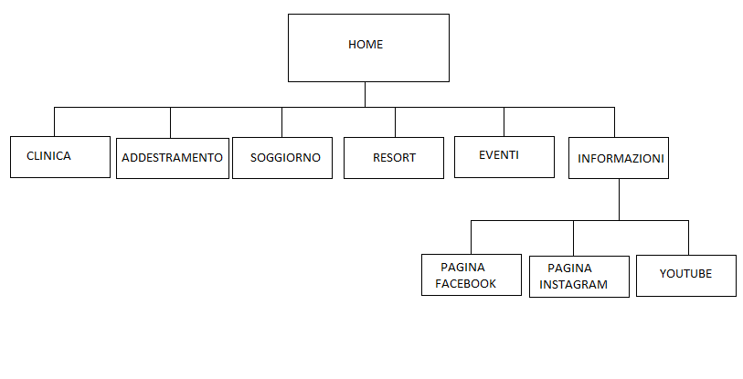
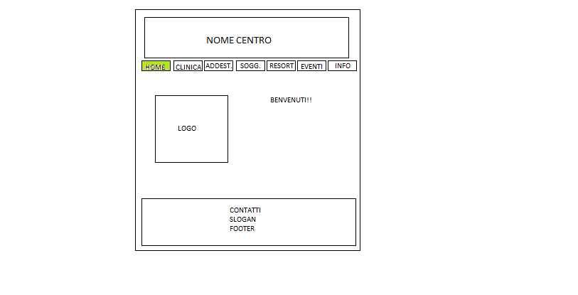
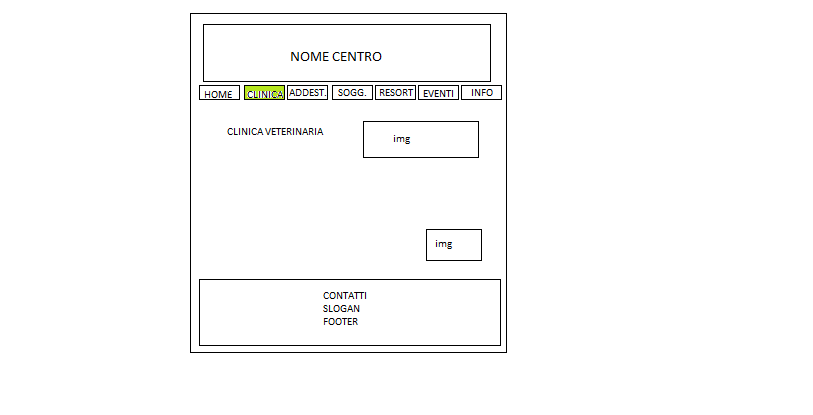
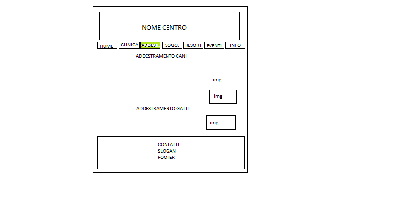
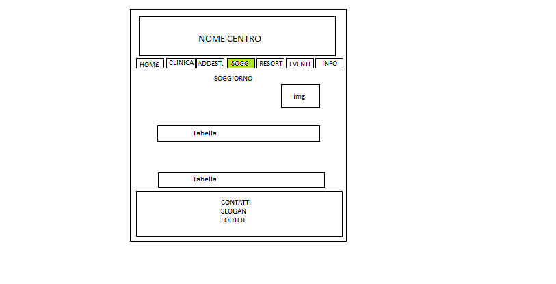
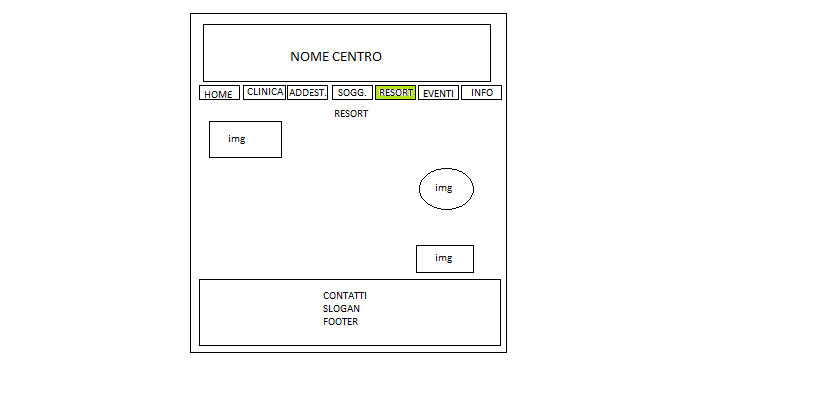
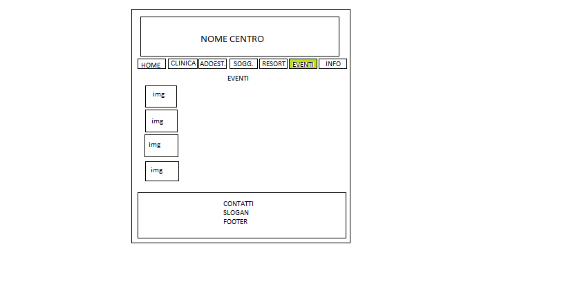
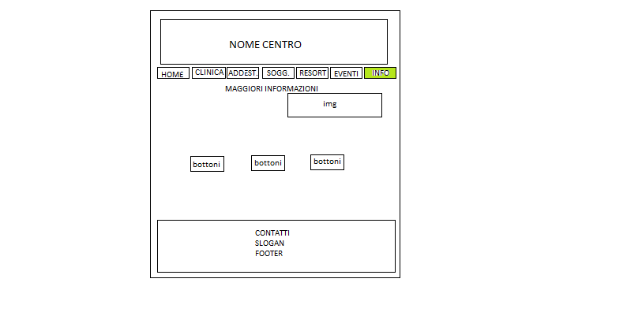

Gli obbiettivi del sito sono di suscitare un senso professionalità ma anche di confidenza e pubblicizzare al meglio il centro per tutte le persone che abitano a Trento o vicinanze, o per le persone in vacanza ma che hanno bisogno dei nostri servizi. Il valore aggiunto del mio sito è la sinteticità degli argomenti, ma che sono descritti in modo preciso.
Il mio progetto ha l'obbiettivo di far conoscere una struttura che è davvero unica nel suo genere. Questo centro per animali racchiude diversi servizi tra i quali quello veterinario, l'addestramento il resort e la pensione per animali. L'obbiettivo di questo sito è di far conoscere la struttura a chiunque abiti a Trento o nelle vicinanze, o magari chi è in vacanza e ha bisogno di un servizio tra quelli che offre questa struttura.
Il target utente è chiunque possieda un animale o si interessi ai servizi che offriamo, ad esempio per la protezione civile o polizia per l'addestramento cani. Il target quindi è molto vasto per questo il sito è intuitivo e lineare.
In Italia non ho trovato competitors che offrissero gli stessi servizi di questa struttura, ma ho trovato di qualche sito che offrono i servizi separatamente, come ad esempio:
http://www.termedifido.it/
http://www.dognet.it/home/articolo.php?id=289
Ognuno di questi siti è poco sintetico e alquanto confusionario, con una grafica poco accattivante.
Il migliore che ho trovato è un sito americano che è anche il più vicino al servizio che offre il centro che ho ideato:
https://reddogpetresort.com/boston/
Questo è un sito ben ideato e progettato ma è complesso con siti che vanno anche abbastanza in profondità, sicuramente non adatto a chi non è pratico della tecnologia. Si sarebbe potuto fare un miglior uso dello scrolling ed evitare dei click a volte inutili.
ARCHITETTURA DEL SITO
WIREFRAME
      
LOOK AND FEEL
Come colore principale ho scelto il verde, un colore che rimanda alla natura dove gli animali possono sentirsi a casa. Ho scelto il bad script corsivo come font per il titolo principale e dello slogan, per dare una nota di eleganza con linee morbide. Ho voluto continuare con linee morbide e pulite per tutto il sito, grazie alla bordatura arrotondata dei paragrafi e delle immagini.
La Home contiene un caldo benvenuto per l'utente a tutti i nostri servizi accanto al Logo del centro.
La pagina della clinica contiene poche immagini ed ha uno registro più tecnico e formale per dare un senso di professionalità anche se è tutto perfettamente capibile dall'utente in quanto non è troppo specifico.
Anche le pagine dell'addestramento, del soggiorno e del resort hanno un registro formale e tecnico sebbene meno che nella pagina dedicata alla clinica, però hanno più immagini.
In particolare la pagina dedicata al soggiorno a vari punti elenco e tabelle interattive per aiutare l'utente a orientarsi tra le informazioni.
Per la pagina degli eventi ho usato un registro più colloquiale per invitare alla partecipazione degli aventi e per creare una sensazione di entusiasmo e confidenza, come se parlassi ad un amico. Inoltre le uniche immagini in cui ho lasciato i bordi originali sono quelle delle polaroid per dare un sensazione di autenticità ed empatia e suscitare la voglia di partecipare a quegli eventi per creare nuovi ricordi.
Nella pagina delle informazioni ho deciso di creare un intero paragrafo dedicato alla storia della struttura, è più lungo rispetto agli altri paragrafi perché chi è interessato alla storia del centro la vuole spiegata bene e con qualche dettaglio in più. Per il resto della pagina ho creato paragrafi molto sintetici giusto per dare le informazioni necessarie all'utente per contattarci, inoltre in questa pagine c'è una piccola sezione dedicata ai consigli con tre bottoni che rimandano ai social del centro in cui ci si possono trovare consigli da parte degli esperti della struttura.
A piè di ogni pagina ho inserito il logo, le informazioni base per trovarci e contattarci e sotto il nostro slogan che riprende il font del titolo e nome del centro.
I linguaggi usati nel progetto sono HTML e CSS. Per il font che ho usato per titolo e slogan ho usato Google fonts, invece per le icone ho usato Font awesome. www.w3schools per trovare il colore giusto per il sito, per le immagini e per aiutarmi con la progettazione del sito quando qualcosa non mi era chiaro. Infine ho usato github per la pubblicazione.
Nel panorama italiano non ho trovato niente che offrisse gli stessi servizi del centro che ho ideato. I siti italiani che sono riuscita a trovare offrono servizi diversi.
Gli obbiettivi comunicativi del sito è far conoscere il centro e dare un' idea dei servizi che offre per suscitare curiosità e fare in modo che l'utente chiami per saperne di più o prenotarsi ad un servizio.
Il target del mio sito è chiunque possieda un animale, che può essere una famiglia con un ragazzo under 25 che è avvezzo alla tecnologia, così come può essere un signore over 60 che non è abituato alla tecnologia. Il target secondario può essere chiunque si interessi ai servizi come l'addestramento, che può aiutare e collaborare con polizia, protezione civile e altre organizzazioni che usano i cani per assisterli nel lavoro.
Il primo gruppo del target del centro li raggiungo grazie ai social, invece per il secondo gruppo, li raggiungerei grazie a mezzi di comunicazione più tradizionali.
Il messaggio del sito è che il centro è un luogo sicuro e affidabile nel quale si può lasciare il proprio animale domestico, l'utente deve riuscire ad orientarsi tra tutti i nostri servizi che sono tanti ma descritti sul sito con informazioni precise e sintetiche. Tutto questo deve portare l'utente a chiamare per avere più informazioni o per prenotarsi per un servizio.
Grazie ai social come Facebook e Instagram riuscirei a raggiungere la fascia di età più giovane, per quello sponsorizzerei il mio sito online e farei sponsorizzare il centro anche da influencer noti anche per essere degli manti degli animali. Invece per fare conoscere il centro anche ad una fascia di età più anziana userei i mezzi di comunicazione più tradizionali, quindi li raggiungerei grazie ad una recensione su giornali locali e magazine.
Per valutare il raggiungimento dell' obbiettivo ho scelto di raggiungere le visualizzazioni su Google Analytics.